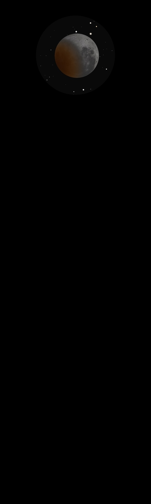

The Moon 
Observations of The Moon
28/09/15
Total Lunar Eclipse
Started by jumping out of bed at 2am BST, by 2:15 watching
from sitting room window. Clear sky, fantastic huge Moon (both
a Harvest Moon and a Super Moon) just starting to move into
the Earths umbra
Great contrast between the lit area and the eclipsed
As the moon moves further into the umbra the orange/red colour
begins to be hinted at through binoculars
Then, Wow, 3:10 Total Eclipse, all white has gone and the moon
is now an amazing orange, graded light to very dark
Through binoculars the stars behind really bring out the 3D
effect, fantastic
Now time for the telescope
Tried 12mm and 18mm eyepieces but settled for 25mm which gives
crisp, focused FOV with those amazing stars behind and also
gives the stars room in the FOV
Two sketches made at the eyepiece just before the Moon emerges
from the umbra, one at 04:10 and the other
at 04:25 together
with their equivalent Stellarium screenshots
Then, just before 04:30 an amazing sight, the very edge of the
Moon suddenly brightens with a crisp light as the umbra moves
away
A truly amazing experience, one I'm very glad I did not miss,
and I'm also pleased that I decided to set up my telescope
rather than just viewing in binoculars
16/01/16
About 1st Quarter, and due south in the early evening sky
which is not yet quite dark at 5:50pm
Surrounded by a halo with the colour changing from pale yellow
close in to a much more orange outer
Using an aperture mask made of cardboard with an offset
circular hole of about 80mm diameter
Mare Serenitatis, really dark and flat and at first glance
unmarked apart from the tiny crater Bessel, 16km across of
which half has a really dark shadow
Crossing Bessel north to south is a really striking white line
of ejecta
About in the centre is a really faint crater with hardly any
shadow, about four times wider than Bessel
The ejecta line points to a perfectly round crater on the
mountain rim, Menelaus
On the other side of Mare Serenitatis from Menelaus is
Posidonius, much larger and surrounded by smaller craters, of
which Daniell is the largest
One of these is in the crater wall of Posidonius itself which
also appears to have a tiny bright crater in its centre
Mare Tranquillitatis, on the west edge sit two craters of
about equal size, Ritter and Sabine which appear to be just
touching
Then just touching Ritter heading north is a dark crater about
a quarter of its diameter, with a similar sized one just
touching it!
From Sabine eastwards is Maskelyne, smaller than Sabine but
obviously deeper, its eastern side is in very dark shadow
And of course, just under halfway from Sabine to Maskelyne and
slightly south is Tranquility Base!
25/11/17
Observed at first without an aperture mask but so bright, even
though just a waxing first quarter Moon
With the high tech aperture mask amazing views, especially of
the terminator
Rory took photos with his phone directly from the eyepiece,
really good
{kind=link}
{kind=link}